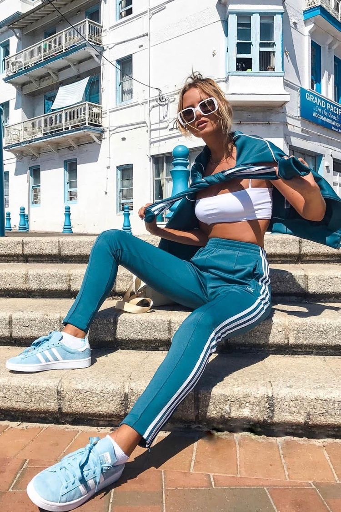
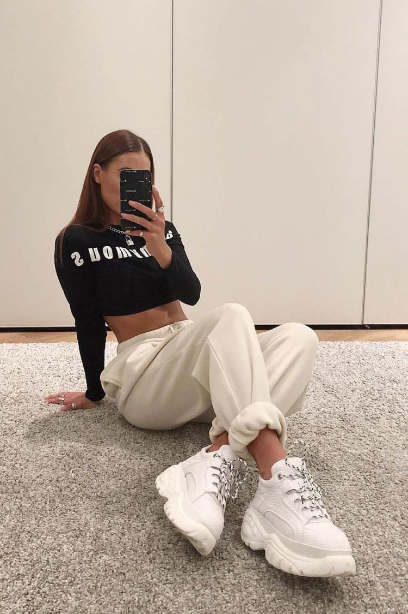
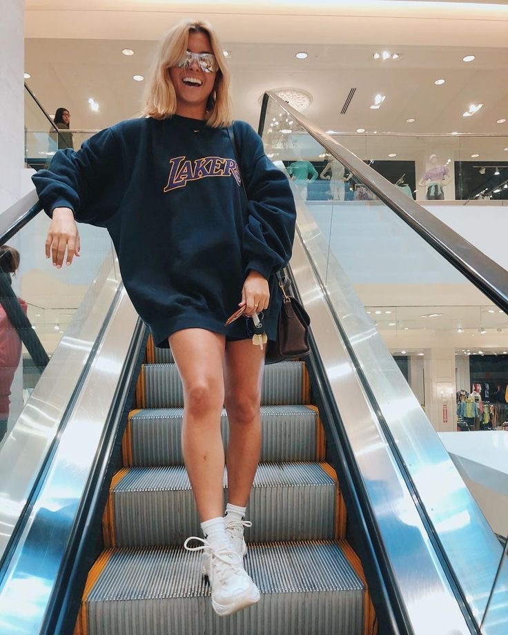

Estilo Sporty
¿Siempre tienes prisa y te gusta ir cómoda? Entonces deja que tu estilo de vestir se adecúe a tu manera de vida y opta por el estilo sporty chic. Sí, hay muchas prendas deportivas que quedan mejor cuando no haces deporte con ellas.
Las claves del estilo sporty
Tennis, sudaderas de moda, camisetas, pantalones de chandal, pero también minifaldas y jeans combinados con prendas deportivas. Y, para las más atrevidas, mallas de ciclista con calcetines.